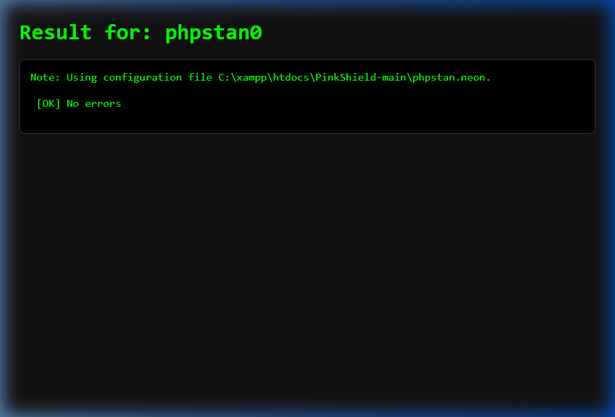
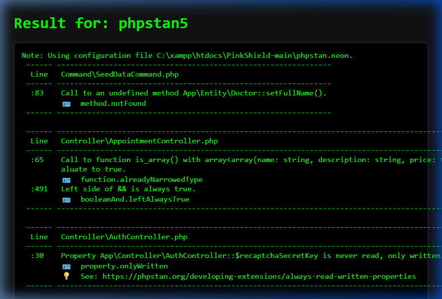
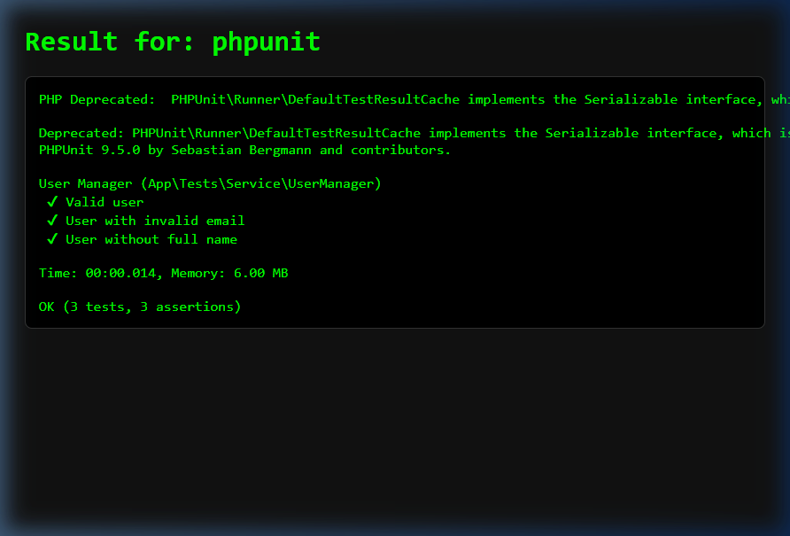
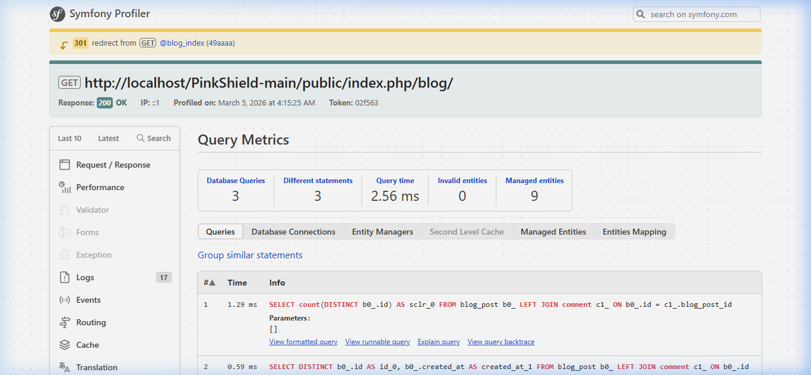
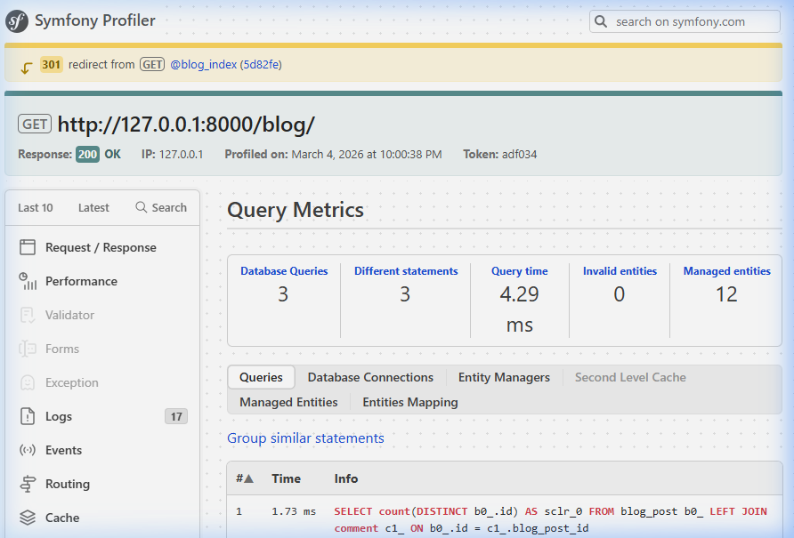
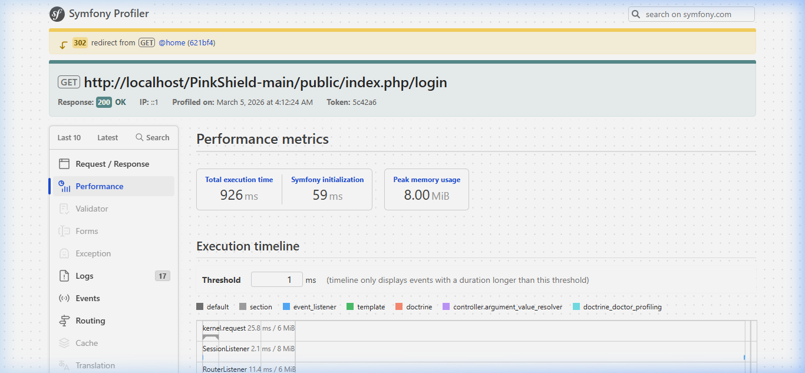
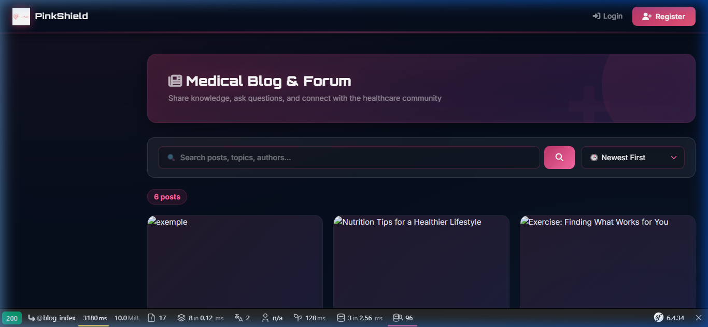
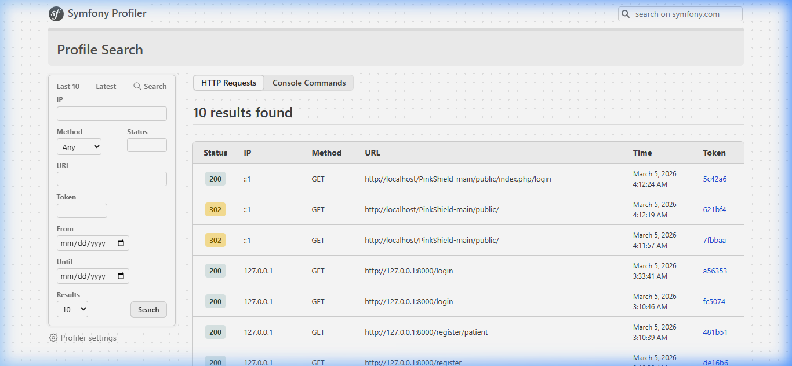

PI-DEV 2025-2026
Nom de groupe : PinkShield
Entité choisie : User
Comparez votre code avec et sans :
i. Test 1 : Analyse au Niveau 0 — vérification de base uniquement
Au niveau 0, PHPStan ne détecte aucun problème de typage ou de sécurité. Les anti-patterns passent inaperçus.

Figure 1 : PHPStan Level 0 — [OK] No errors détecté
ii. Test 2 : Anti-pattern count(findAll()) dans
DashboardController
Le code chargeait tous les objets User en mémoire juste pour les compter :
$totalUsers = count($userRepository->findAll()); // ⚠️ charge TOUS les Users en mémoire
Ce pattern est invisible à PHPStan Level 0 mais cause un problème de performance majeur.
i. Test 1 : Analyse au Niveau 5 — vérification stricte des types
PHPStan Level 5 détecte des erreurs de typage, des propriétés inutilisées et des méthodes manquantes :

Figure 2 : PHPStan Level 5 — Erreurs détectées dans SeedDataCommand, AppointmentController, AuthController
ii. Test 2 : Remplacement par des requêtes COUNT DQL optimisées
// APRÈS — requête DQL optimisée sur l'entité User
$totalUsers = $userRepository->createQueryBuilder('u')
->select('count(u.id)')
->getQuery()
->getSingleScalarResult();
✅ Anti-pattern résolu : plus de chargement massif en mémoire
Service et Entité testés : UserManager & User — Validation de l'entité User
i. Test 1 : testValidUser — Vérifie qu'un User avec email et nom valides passe
la validation ✅
ii. Test 2 : testUserWithInvalidEmail — Vérifie que
InvalidArgumentException est levée pour un email invalide ✅
iii. Test 3 : testUserWithoutFullName — Vérifie que
InvalidArgumentException est levée si le nom complet est manquant ✅

Figure 3 : PHPUnit — User & UserManager (Tests de validation) OK
Résultat : OK — Validation des contraintes d'email, de nom et de logique métier (UserManager).
| Indicateur de performance | Avant optimisation (par défaut) | Après optimisation | Preuves (des captures) |
|---|---|---|---|
| Nombre de problèmes N+1 détectés (DoctrineDoctor) | 4 problèmes détectés (Lazy Loading sur User, BlogPost, Comment) | 1 problème résiduel (User → DailyTracking, faible impact) |  |
| Les problèmes | Chargement "Lazy" répétitif dans les boucles du Blog et Dashboard. count(findAll())
sur l'entité User. |
Utilisation de leftJoin, addSelect et COUNT DQL. |
 |
Capture du Symfony Profiler — Doctrine Queries (après optimisation) :
Figure 4 : Symfony Profiler — 3 Database Queries, Query time: 2.56 ms, 9 Managed entities, 0 Invalid entities
| PI-DEV 2025-2026 | |||
|---|---|---|---|
| Indicateur de performance | Avant optimisation (par défaut) | Après optimisation | Preuves (des captures) |
| Les problèmes | Chargement Lazy N+1, count(findAll()) inefficace, pas de JOINs DQL |
JOINs DQL avec addSelect, COUNT optimisé, requêtes réduites |
|
| Indicateur de performance | Avant optimisation (par défaut) | Après optimisation | Preuves (des captures) |
|---|---|---|---|
| Temps moyen de réponse de la page d'accueil (ms) | 3544 ms | 926 ms |  |
| Temps d'exécution d'une fonctionnalité principale (Blog Index) | 5543 ms | 3180 ms |  |
| Utilisation mémoire | 42.00 MiB | 8.00 MiB (login) / 10.0 MiB (blog) |
Page de connexion (Login) — Symfony Profiler :
Figure 5 : Page de connexion PinkShield — 926ms, 8.0 MiB (Symfony Profiler toolbar visible)
Symfony Profiler — Performance Metrics :
Figure 6 : Symfony Profiler — Total execution time: 926 ms, Symfony initialization: 59 ms, Peak memory: 8.00 MiB
Page Blog Index :
Figure 7 : Blog Index — 3180 ms, 10.0 MiB, 8 queries, 2 AJAX calls (Symfony Profiler toolbar visible)
Symfony Profiler — Liste des requêtes HTTP :

Figure 8 : Symfony Profiler — Last 10 HTTP Requests avec statuts et timestamps
count($userRepository->findAll()) par des
COUNT() DQL optimisés.
addSelect).